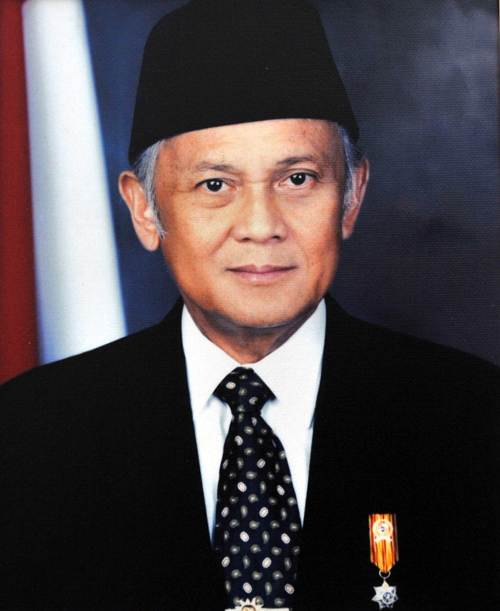

basic card
card title
Lapisan ozon menipis. Hutan-hutan tropis mulai meranggas.
Gurun makin luas. Akibatnya suhu bumi meningkat,
cuaca tidak menentu, dan bencana
alam makin sering datang. Kesimpulannya,
bumi makin kritis. Siapa sesungguhnya yang
berperan dalam menjadikan planet bumi ini menjadi
demikian? Jawabnya tentu manusia sendiri!
card title
Lapisan ozon menipis. Hutan-hutan tropis mulai meranggas.
Gurun makin luas. Akibatnya suhu bumi meningkat,
cuaca tidak menentu, dan bencana
alam makin sering datang. Kesimpulannya,
bumi makin kritis. Siapa sesungguhnya yang
berperan dalam menjadikan planet bumi ini menjadi
demikian? Jawabnya tentu manusia sendiri!
Image card

Soeharto
Soeharto adalah presiden RI ke 2

Bj Habibie
Bj habibie adalah presiden RI ke 3

Soeharto
Gusdur adalah presiden RI ke 4